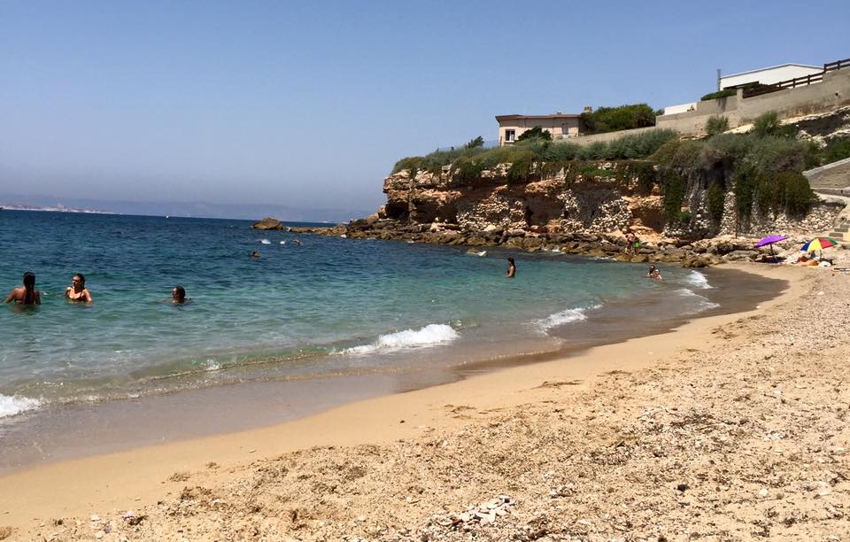

Les plages
Quelque petits coins de paradis...
Quelque petits coins de paradis...
C’est LA plage la plus accessible quand on se trouve dans le centre de Marseille. Ce n’est pas la plus belle, ni celle qui a l’eau la plus bleue, mais elle est à 15 minutes à pied du Vieux Port et est idéale pour aller piquer une tête à l’improviste.

Cette petite plage de sable connue des Marseillais est aussi appelée l'Anse des sablettes. Elle est discrète, très familiale et convviale. On y descend par des escaliers, la plage est plutôt étroite mais l'eau y est belle. Le matin, l’ombre attire de nombreuses familles avec des enfants, et le soir venu les jeunes marseillais viennent y faire des soirées au clair de lune.
Le Cabanon de Paulette est l’endroit idéal pour les Marseillais en quête d’un lieu convivial pour partager un verre tout en profitant de la brise marine. C'est un bar situé dans la ville de Marseille. L'établissement se trouve sur le boulevard des Baigneurs dans le quartier de Montredon.

Les eum iriure dolor in hendrerit in vulputate velit esse molestie consequat, vel illum dolore eu feugiat nulla facilisis at vero eros et accumsan et iusto odio dignissim qui blandit praesent luptatum